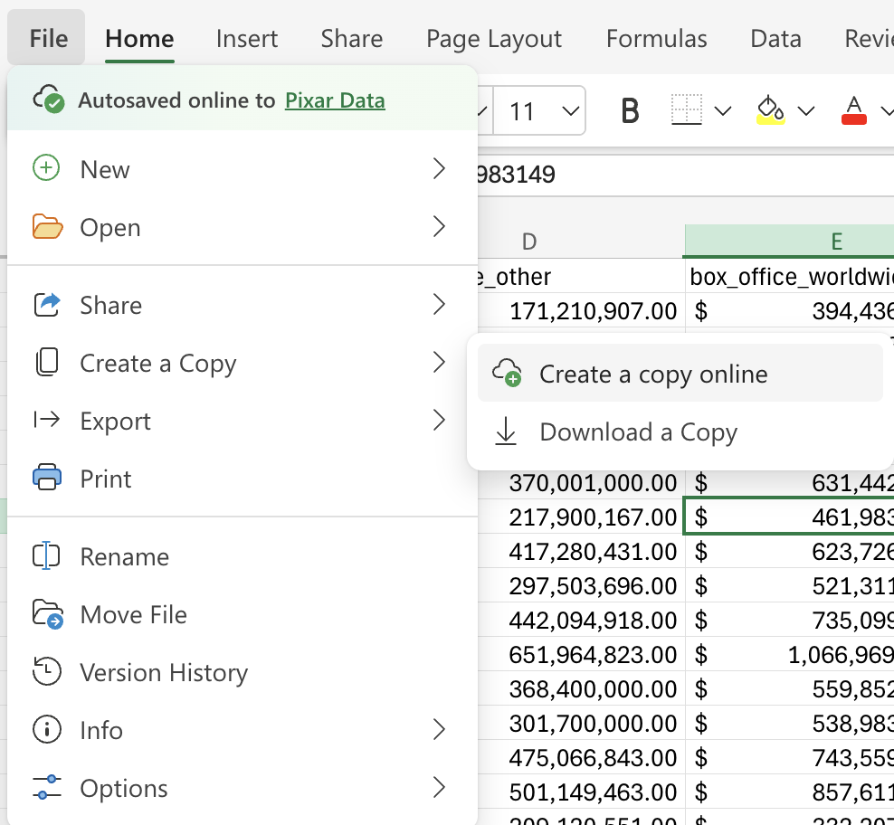
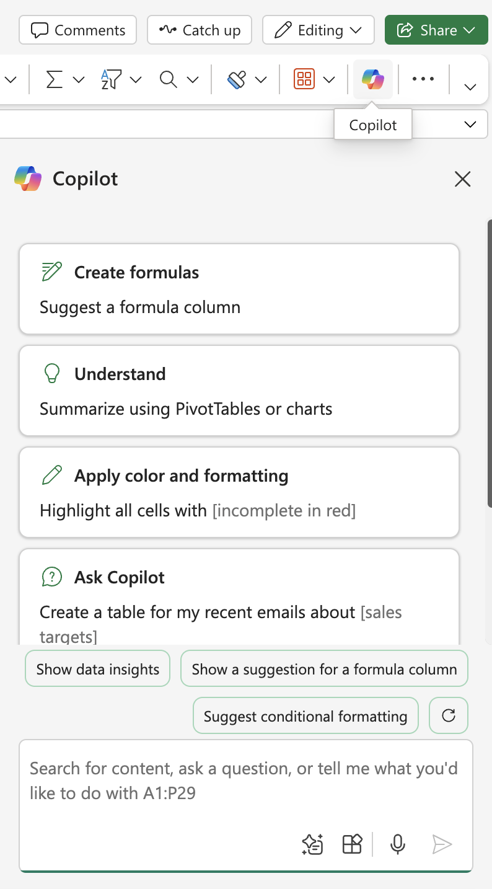

Section 1.1 Analyzing Pixar film data in Excel
Go to “File” and create a copy of this file online:

Click on the Copilot icon so that a Copilot window shows up on your screen:

This file includes the budgets, gross sales data, release dates, and other facts about Pixar films.
Now let’s use Copilot to investigate our data!
Example 1.1.2.
What film did the best (or the worst) in the United States and Canada?
Sort the films from largest to smallest using worlwide box office sales (column E).
What is the average in Column C (US and Canada box office sales)?
The average value in Column C should be \(\$247{,}544{,}425.32\text{.}\) Have Excel highlight rows for which the value in Column C is less than \(\$247{,}544{,}425.32\text{.}\)
Highlight movies that were released after 2021.
-
The values in this dataset have not been adjusted for inflation. Ask Copilot to create a column labeled “budget adjusted for inflation”, and adjust the values from column B for inflation, using the release dates in column F.
Create a column labeled “box office worldwide adjusted for inflation”, and adjust the values from column E for inflation, using the release dates in column F. (Does Copilot adjust the values for inflation the same way it did to create column Q? If not, adjust the formula from column Q to create this new column.)
Now let’s practice using Copilot in Excel to create data visualizations.
Example 1.1.3.
Try using Copilot to create the visualization or to answer the question.
(a)
Create a scatter plot for budget adjusted for inflation vs. worldwide sales adjusted for inflation. (If you insert the chart into the Excel sheet, is the chart correct?)
Hint.
Try the prompt: “Create a scatter plot using columns Q and R.”
(b)
Create a line chart showing the number of films released each year.
(c)
Make a table showing how many films were rated G and PG.
(d)
Make a bar chart for film ratings.
(e)
How did average worldwide box office sales for G movies compare to average worldwide box office sales for PG movies?
(f)
Create a box-and-whisker chart for the Rotten Tomatoes Score (in column J). Are there any outliers?
Example 1.1.4.
(a)
Create a confidence interval for the mean box office worldwide sales adjusted for inflation in column R.
(b)
Create a regression model to predict box office worldwide sales adjusted for inflation based on budget adjusted for inflation.
Is there an error? Why?
If you are able to use the response to create the model, how could you verify that it is correct?
What box office sales would we predict using this model if the budget is \(\$300{,}000{,}000\text{?}\)